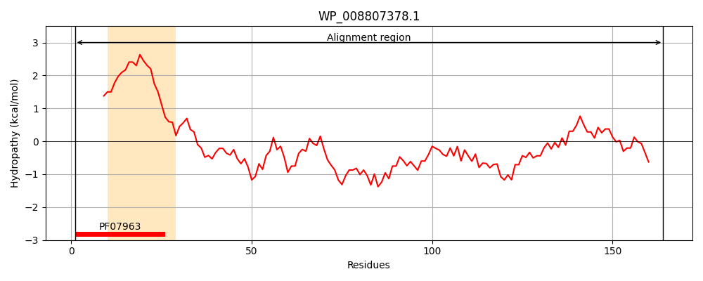
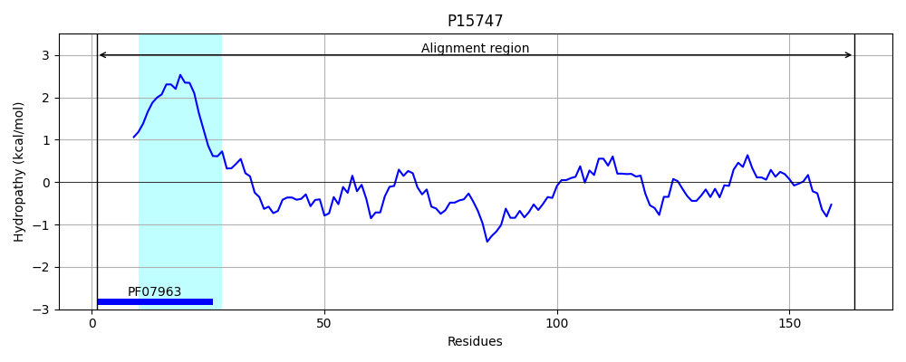
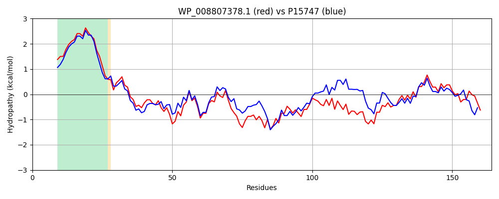

Hit Accession: P15747
Hit TCID: 3.A.15.1.1
Hit Description: gnl|BL_ORD_ID|9182 gnl|TC-DB|P15747|3.A.15.1.1 General secretion pathway protein H precursor (Pullulanase secretion protein pulH) - Klebsiella pneumoniae.
Mach Len: 164
e:0.000000
Query TMS Count : 1
Hit TMS Count: 1
TMS-Overlap Score: 0.950000
Predicted Substrates:CHEBI:36080;protein
BLAST Alignment:
Score: 535 , Bit scores: 210 bits, E-value: 1.2e-70, Alignment length: 164, Percentage identity: 61
Query: 1 MSQRGFTLLEMMLVLLLIGVSASMVLLAFPSARTQEATQILARFQAQLDFVRERGQQTGQLFGIVIHPDRWQFMRLQPADEDAPAAADDRWGNAQWLPLQAGRVTTAETLPRTRLTLRFPDGQAWTPGEQPDVLIFPGGEVTPFQLRIDAATGITIDAQGDSQP 164
M QRGFTLLEMML+LLL+GVSA MVLLAFP++R A Q LARF+AQL FV++RG QTGQ FG+ +HPDRWQF+ L+ D PA ADD W +WLPL+AGRV T+ ++ +L L F G+AWTPG+ PDVLIFPGGE+TPF+L + A GI +A+G+S P
Sbjct: 1 MRQRGFTLLEMMLILLLMGVSAGMVLLAFPASRDDSAAQTLARFEAQLRFVQQRGLQTGQFFGVSVHPDRWQFLVLEARDGADPAPADDGWSGYRWLPLRAGRVATSGSIAGGKLNLAFAQGEAWTPGDNPDVLIFPGGEMTPFRLTLGEAPGIAFNARGESLP 164 | Protein Hydropathy Plots: |
|---|
|  |  |
Pairwise Alignment-Hydropathy Plot:
|
|---|
|  |